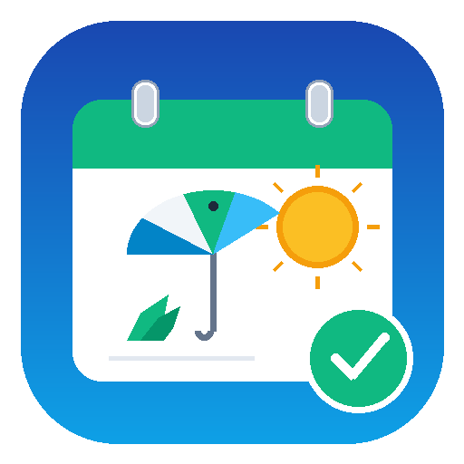

CongéDesk
Manuel d'Utilisation & Guide Pratique
دليل الاستخدام والشرح العملي للنظام
Formulaire CNAS GRH.22
Édition Bilingue FR / AR
Release Desktop v1.0.0
Guide complet et illustré pour la gestion automatisée des congés annuels, le calcul instantané des droits et reliquats, et l'impression conforme sur papier officiel pré-imprimé ou document complet.
دليل شامل ومصور لتسيير العطل السنوية للموظفين، واحتساب البواقي تلقائياً، والطباعة الدقيقة على الورق الرسمي المسبق الطبع أو النموذج الكامل.
Section 1 : Guide d'Utilisation en Français
Partie I : Interface & Calculs
1. Tableau de Bord & Annuaire des Employés
Dès l'ouverture, CongéDesk démarre dans un thème clair moderne et épuré. La barre de menus superflue a été supprimée au profit d'une barre supérieure intuitive avec le logo officiel, la recherche rapide et les commandes icônes (changement de langue et bascule thème clair/sombre).
Indicateurs KPIs en Temps Réel
Suivi instantané du nombre total d'agents, du quota annuel légal (30 jours), du nombre de titres émis et de la somme des reliquats N-1.
Cartes Employés Dédiées
Remplacement des tableaux par des cartes modernes avec statut du solde, coordonnées professionnelles et jauge visuelle du reliquat restant.
2. Calculateur Automatique des Congés & Reliquats
En cliquant sur le bouton « Nouveau Congé » d'une carte employé, le volet latéral (Drawer) s'ouvre avec la calculatrice intelligente :
Total Droits = Reliquat N-1 + Droit Annuel (30 j)
Jours Restants = Total Droits - Congé Demandé
- Préréglages Rapides : Boutons +7j, +15j, +21j, +30j (1 mois complet) pour une saisie en un clic.
- Calcul Automatique des Dates : Saisissez la date de départ et le nombre de jours, la date de reprise est automatiquement calculée au jour près.
- Alertes Dynamiques de Dépassement : Détection automatique du solde disponible avec alerte verte (suffisant), orange (épuisé) ou rouge (dépassement avec affichage du déficit).
Section 1 : Guide d'Utilisation en Français (Suite)
Partie II : Impression & Formulaire GRH.22
3. Les Deux Modes d'Impression & d'Exportation
CongéDesk répond parfaitement aux besoins des services du personnel grâce à son double mode de rendu :
Option A : Imprimer (Papier Officiel Pré-imprimé) - Innovation Clé
Si votre imprimante contient déjà des formulaires papier cartonnés vierges fournis par l'administration CNAS, cliquez sur « Imprimer (Papier Officiel) » ou « PDF Données Seules ». Le logiciel rend tous les arrière-plans, cadres, logos et bordures transparents, et imprime exclusivement les textes et dates aux coordonnées physiques exactes des cases !
Option B : Imprimer Tout (Document Complet)
Si vous utilisez du papier blanc ordinaire A4/A5, cliquez sur « Imprimer Tout » ou « PDF Complet » pour imprimer la reproduction vectorielle haute définition intégrale du formulaire CNAS GRH.22.
4. Isolation Linguistique Totale
En mode Français, l'application applique un filtrage strict : seuls les noms, fonctions, services et adresses en français apparaissent, sans aucun texte parasite en arabe.
القسم الثاني : دليل الاستخدام باللغة العربية
الجزء الأول : الواجهة والعمليات
1. نظرة عامة ولوحة تسيير الموظفين
تم تصميم برنامج CongéDesk لتسيير الإجازات السنوية وإصدار استمارة CNAS GRH.22 (بيان العطلة السنوية) بدقة وسرعة فائقة. يعمل البرنامج افتراضياً بالوضع المضيء العصري وبخط Tajawal العربي الأصيل، مع عزل لغوي تام (100% عربي عند اختيار اللغة العربية).
مؤشرات إحصائية مباشرة
عرض إجمالي الموظفين، الحق السنوي القانوني (30 يوماً)، عدد السندات المصدرة، ومجموع الأيام المتبقية من السنوات السابقة (N-1).
نظام البطاقات الذكي
عرض كل موظف في بطاقة تفاعلية تحتوي رتبته، مصلحته، وعنوانه باللغة العربية فقط، مع شريط بياني يوضح رصيده المتبقي.
2. حاسبة العطل والبواقي التلقائية
عند الضغط على زر « منح عطلة »، يفتح درج الإدخال الجانبي مع حاسبة ذكية تطبق المعادلة النظامية المعتمدة :
مجموع الحقوق = رصيد السنة السابقة (N-1) + الحق السنوي (30 يوم)
الأيام المتبقية = مجموع الحقوق - العطلة المطلوبة
- أزرار الاختيار السريع : أزرار جاهزة لإضافة 7 أيام، 15 يوماً، 21 يوماً، أو شهر كامل (30 يوماً) بنقرة واحدة.
- الحساب التلقائي لتواريخ الخروج والاستئناف : عند تحديد تاريخ الانطلاق وعدد الأيام، يتم استنتاج تاريخ العودة والرجوع للعمل تلقائياً.
- تنبيهات فورية لتجاوز الرصيد : تلوين فوري للرصيد مع إشعار باللون الأخضر (رصيد كافٍ)، أو البرتقالي (رصيد مستنفد)، أو الأحمر (تنبيه التجاوز مع بيان عدد الأيام الزائدة).
القسم الثاني : دليل الاستخدام باللغة العربية (تابع)
الجزء الثاني : المعاينة والطباعة
3. الطباعة الذكية على الورق الرسمي المسبق الطبع
تحتوي مكاتب الموارد البشرية لدى هيئات الضمان الاجتماعي (CNAS) على نماذج ورقية مطبوعة مسبقاً. يوفر البرنامج ميزة ثورية لهذه النماذج :
الخيار الأول : طباعة (ورق رسمي جاهز)
عند تفعيل وضع « ورق رسمي جاهز »، يقوم البرنامج بإخفاء كافة الإطارات والشعارات والخطوط، ويطبع فقط النصوص والتواريخ والأرقام في الإحداثيات المليمترية الدقيقة المتطابقة مع خانات الورقة الرسمية الموجودة في درج الطابعة.
الخيار الثاني : طباعة الوثيقة كاملة / PDF كامل
في حالة استخدام ورق أبيض عادي A4/A5، يقوم البرنامج بطباعة النموذج الرسمي كاملاً مع شعار الصندوق الوطني للتأمينات الاجتماعية وختم الهيئة والجدول الإحصائي.
4. الحفظ في قاعدة بيانات SQLite المحلية
عند الضغط على « حفظ وخصم الرصيد »، يتم تسجيل سند العطلة في قاعدة بيانات congedesk.sqlite، مع تحديث رصيد الموظف تلقائياً ليكون جاهزاً للإصدارات القادمة.